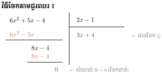
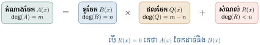
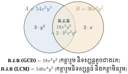
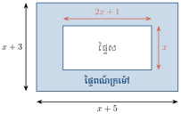
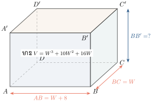

- ធ្វើប្រមាណវិធីចែកពហុធានិងពហុធាបានត្រឹមត្រូវ
- រកតួចែករួមធំបំផុត (GCD) និងពហុគុណរួមតូចបំផុត (LCM) បានត្រឹមត្រូវ
- សម្រួលកន្សោមប្រភាគ និងធ្វើប្រមាណវិធីលើកន្សោមប្រភាគបានត្រឹមត្រូវ ។
1. ប្រមាណវិធីចែកពហុធា
1.1 វិធីចែកដាច់នៃពហុធា
ឧទាហរណ៍ 1 : ក្នុងវិធីចែករវាងចំនួន \(\displaystyle 18\) នឹង \(\displaystyle 3\) គេអាចសរសេរ \(\displaystyle 18 \div 3 = \frac{18}{3} = 6\) ។
ដូច្នេះ \(\displaystyle 18 = 3 \times 6\) គេថា \(\displaystyle 18\) ចែកដាច់នឹង \(\displaystyle 3\) ។ \(\displaystyle 3\) ជាតួចែកនៃ \(\displaystyle 18\) ហើយ \(\displaystyle 18\) ជាផលគុណនៃ \(\displaystyle 3\) និង \(\displaystyle 6\) ។
បើគេឱ្យកន្សោមពីរ \(\displaystyle A\) និង \(\displaystyle B\) រួចមានកន្សោម \(\displaystyle Q\) មួយដែល \(\displaystyle A = B \times Q\) នោះគេថា \(\displaystyle A\) ចែកដាច់នឹង \(\displaystyle B\) ។ \(\displaystyle B\) ជាតួចែក \(\displaystyle Q\) ជាផលចែក និង \(\displaystyle A\) ជាតំណាងចែក ឬជាផលគុណនៃ \(\displaystyle B\) និង \(\displaystyle Q\) ។ គេកំណត់សរសេរ \(\displaystyle A \div B = Q\) ឬ \(\displaystyle \frac{A}{B} = Q\) ។
ឧទាហរណ៍ 2 : ដោយ \(\displaystyle x^2 - 5x + 4 = (x-1)(x-4)\) នោះ គេថាកន្សោម \(\displaystyle x-1\) ជាតួចែក និង \(\displaystyle x-4\) ជាផលចែករវាងកន្សោម \(\displaystyle x^2 - 5x + 4\) និង \(\displaystyle x-1\) ហើយ \(\displaystyle x^2 - 5x + 4\) ជាផលគុណនៃ \(\displaystyle x-1\) នឹង \(\displaystyle x-4\) ។ គេកំណត់សរសេរ \(\displaystyle (x^2 - 5x + 4) \div (x-1) = x-4\) ។

បើគេមានកន្សោម \(\displaystyle A = 6x^2 + 5x - 4\) និង \(\displaystyle B = 2x-1\) គណនា \(\displaystyle A \div B\) ។
ធ្វើវិធីចែកតាមជួរឈរ ៖
\(\displaystyle \begin{array}{rl} 6x^2 + 5x - 4 & \vline\; 2x - 1 \\ \cline{2-2} \underline{6x^2 - 3x\phantom{-4}} & 3x + 4 \\ 8x - 4 & \\ \underline{8x - 4} & \\ 0 & \end{array}\)
ដូច្នេះ \(\displaystyle A \div B = 3x+4\) ឬ \(\displaystyle 6x^2 + 5x - 4 = (2x-1)(3x+4)\) ។
ធ្វើប្រមាណវិធីចែកខាងក្រោម៖
- ក. \(\displaystyle (x^2 + 6x - 55) \div (x-5)\)
- ខ. \(\displaystyle (6y^4 - 10y^2 + y^3 + 6 + 7y) \div (2y+3)\)
- គ. \(\displaystyle (5a^2 + 2a^3 - 1) \div (-1 + 2a + a^2)\) ។
មើលចម្លើយ
- ក. \(\displaystyle x^2 + 6x - 55 = (x-5)(x+11) \implies \text{ផលចែកគឺ } x+11\)
- ខ. រៀបតាមលំដាប់ស្វ័យគុណចុះ \(\displaystyle 6y^4 + y^3 - 10y^2 + 7y + 6 \div (2y+3) = 3y^3 - 4y^2 + y + 2\)
- គ. \(\displaystyle (2a^3 + 5a^2 - 1) \div (a^2 + 2a - 1) = 2a + 1\) ។
1.2 វិធីចែកមានសំណល់នៃពហុធា

ធ្វើប្រមាណវិធីចែក \(\displaystyle (2x^3 - 3x^2 - x + 4) \div (2x^2 + 2x - 3)\) ។
\(\displaystyle \begin{array}{rl} 2x^3 - 3x^2 - x + 4 & \vline\; 2x^2 + 2x - 3 \\ \cline{2-2} \underline{2x^3 + 2x^2 - 3x\phantom{+4}} & x - \frac{5}{2} \\ -5x^2 + 2x + 4 & \\ \underline{-5x^2 - 5x + \frac{15}{2}} & \\ 7x - \frac{7}{2} & \end{array}\)
តាង \(\displaystyle Q = x - \frac{5}{2}\) ជាផលចែក និង \(\displaystyle R = 7x - \frac{7}{2}\) ជាសំណល់នៃវិធីចែក ។
គេបាន \(\displaystyle 2x^3 - 3x^2 - x + 4 = (2x^2 + 2x - 3)\left(x - \frac{5}{2}\right) + \left(7x - \frac{7}{2}\right)\) ។
គេឱ្យកន្សោមពីរ \(\displaystyle A\) និង \(\displaystyle B\) ដែលមានអថេរដូចគ្នា ហើយមានដឺក្រេ \(\displaystyle m\) និង \(\displaystyle n\) រៀងគ្នា (\(\displaystyle B \ne 0\)) ។ បើ \(\displaystyle m \ge n\) គេអាចរកកន្សោមពីជគណិត \(\displaystyle Q\) និង \(\displaystyle R\) តែមួយគត់ដែល ៖
ផលចែក \(\displaystyle Q\) មានដឺក្រេ \(\displaystyle m-n\) ។ បើ \(\displaystyle R=0\) គេថា \(\displaystyle A\) ចែកដាច់នឹង \(\displaystyle B\) ។
ធ្វើប្រមាណវិធីចែកខាងក្រោម៖
- ក. \(\displaystyle (4x-5) \div (x+2)\)
- ខ. \(\displaystyle (x^3 - x^2 + x - 1) \div (x+2)\)
- គ. \(\displaystyle (3x^2 + 2x + 1) \div (3x-4)\)
- ឃ. \(\displaystyle (3x^2 + 5x - 2) \div (2x+1)\) ។
មើលចម្លើយ
- ក. ផលចែក \(\displaystyle Q = 4\), សំណល់ \(\displaystyle R = -13 \implies \frac{4x-5}{x+2} = 4 - \frac{13}{x+2}\)
- ខ. ផលចែក \(\displaystyle Q = x^2 - 3x + 7\), សំណល់ \(\displaystyle R = -15 \implies x^2 - 3x + 7 - \frac{15}{x+2}\)
- គ. ផលចែក \(\displaystyle Q = x + 2\), សំណល់ \(\displaystyle R = 9 \implies x + 2 + \frac{9}{3x-4}\)
- ឃ. ផលចែក \(\displaystyle Q = \frac{3}{2}x + \frac{7}{4}\), សំណល់ \(\displaystyle R = -\frac{15}{4}\) ។
ចែក \(\displaystyle (y^4 - 2y^2 - y + 8)\) និង \(\displaystyle (y^2 - y - 2)\) ។
\(\displaystyle \begin{array}{rl} y^4 + 0y^3 - 2y^2 - y + 8 & \vline\; y^2 - y - 2 \\ \cline{2-2} \underline{y^4 - y^3 - 2y^2\phantom{-y+8}} & y^2 + y + 1 \\ y^3 + 0y^2 - y + 8 & \\ \underline{y^3 - y^2 - 2y\phantom{+8}} & \\ y^2 + y + 8 & \\ \underline{y^2 - y - 2} & \\ 2y + 10 & \end{array}\)
គេបាន \(\displaystyle y^4 - 2y^2 - y + 8 = (y^2 - y - 2)(y^2 + y + 1) + (2y + 10)\) ។
ធ្វើប្រមាណវិធីចែកខាងក្រោម៖
- ក. \(\displaystyle (a^4 + 7a - 1) \div (a^2 + 2)\)
- ខ. \(\displaystyle (x^4 - 25x^2 + 8x - 3) \div (x^2 - 3x + 1)\)
- គ. \(\displaystyle (x^5 - 2x^3 - 4x + 5) \div (3x^3 + 2)\)
- ឃ. \(\displaystyle \left(\frac{1}{2}x^4 + 4x^2 + x + 5\right) \div (3x^2 + 2)\) ។
មើលចម្លើយ
- ក. ផលចែក \(\displaystyle a^2 - 2\), សំណល់ \(\displaystyle 7a + 3\)
- ខ. ផលចែក \(\displaystyle x^2 + 3x - 17\), សំណល់ \(\displaystyle -46x + 14\)
- គ. ផលចែក \(\displaystyle \frac{1}{3}x^2 - \frac{2}{3}\), សំណល់ \(\displaystyle -\frac{2}{3}x^2 - 4x + \frac{19}{3}\)
- ឃ. ផលចែក \(\displaystyle \frac{1}{6}x^2 + \frac{11}{9}\), សំណល់ \(\displaystyle x + \frac{23}{9}\) ។
2. តួចែករួមធំបំផុត និងពហុគុណរួមតូចបំផុតនៃពហុធា

ឧទាហរណ៍ : គេមានឯកធា \(\displaystyle 75x^3y^4\) និង \(\displaystyle 45x^2y^5\) ។
គេសរសេរ ៖
ឯកធាទាំងពីរនេះមាន \(\displaystyle 3 \times 5 \times x^2 \times y^4 = 15x^2y^4\) ជាកត្តារួមដែលមាននិទស្សន្តតូចជាងគេ ហៅថា តួចែករួមធំបំផុត (GCD) ។
កន្សោម \(\displaystyle 3^2 \times 5^2 \times x^3 \times y^5 = 225x^3y^5\) ហៅថា ពហុគុណរួមតូចបំផុត (LCM) ។
- តួចែករួមធំបំផុត (GCD) នៃកន្សោម \(\displaystyle A\) និង \(\displaystyle B\) គឺជាផលគុណកត្តារួម ដែលមាននិទស្សន្តតូចជាងគេ ។
- ពហុគុណរួមតូចបំផុត (LCM) នៃកន្សោម \(\displaystyle A\) និង \(\displaystyle B\) គឺជាផលគុណកត្តារួមដែលមាននិទស្សន្តធំជាងគេ និងកត្តាមិនរួមទាំងអស់ ។
ដើម្បីគណនាតួចែករួមធំបំផុត (GCD) ៖
- ដាក់កន្សោមនីមួយៗជាផលគុណកត្តា ។
- ជ្រើសរើសកត្តារួមដែលមាននិទស្សន្តតូចជាងគេ ។
- គុណកត្តារួមទាំងនោះបញ្ចូលគ្នា ។
ដើម្បីគណនាពហុគុណរួមតូចបំផុត (LCM) ៖
- ដាក់កន្សោមនីមួយៗជាផលគុណកត្តា ។
- ជ្រើសរើសកត្តារួមដែលមាននិទស្សន្តធំជាងគេ និងកត្តាមិនរួមទាំងអស់ ។
- គុណកត្តាទាំងអស់នោះបញ្ចូលគ្នា ។
រកតួចែករួមធំបំផុត និងពហុគុណរួមតូចបំផុតនៃកន្សោម ៖
- តួចែករួមធំបំផុត (GCD) គឺ \(\displaystyle 2^1 \times 3^2 \times x^3 \times y^2 = 18x^3y^2\) ។
- ពហុគុណរួមតូចបំផុត (LCM) គឺ \(\displaystyle 2^2 \times 3^3 \times 5^1 \times x^6 \times y^5 = 540x^6y^5\) ។
រកតួចែករួមធំបំផុត និងពហុគុណរួមតូចបំផុតនៃកន្សោម \(\displaystyle x^2(x-1)\) និង \(\displaystyle x(x-1)(x+1)\) ។
| \(\displaystyle x^2\) | \(\displaystyle (x-1)\) | |||
| \(\displaystyle x\) | \(\displaystyle (x-1)\) | \(\displaystyle (x+1)\) | ||
| \(\displaystyle x\) | \(\displaystyle (x-1)\) | \(\displaystyle \rightarrow\) តួចែករួមធំបំផុត | ||
| \(\displaystyle x^2\) | \(\displaystyle \times\) | \(\displaystyle (x-1)\) | \(\displaystyle \times\) | \(\displaystyle (x+1)\) \(\displaystyle \rightarrow\) ពហុគុណរួមតូចបំផុត |
ដូច្នេះ តួចែករួមធំបំផុតគឺ \(\displaystyle x(x-1)\) និងពហុគុណរួមតូចបំផុតគឺ \(\displaystyle x^2(x-1)(x+1)\) ។
រកតួចែករួមធំបំផុត និងពហុគុណរួមតូចបំផុត ៖
- ក. \(\displaystyle 3x^5\), \(\displaystyle 4x^7\) និង \(\displaystyle 5x^3\)
- ខ. \(\displaystyle 25x^3y^2\), \(\displaystyle 30x^6y^3\) និង \(\displaystyle 15x^2y^4\)
- គ. \(\displaystyle 4x^2-2x-12\) និង \(\displaystyle 4x^2-16\) ។
មើលចម្លើយ
- ក. \(\displaystyle \text{GCD} = x^3\), \(\displaystyle \text{LCM} = 60x^7\)
- ខ. \(\displaystyle \text{GCD} = 5x^2y^2\), \(\displaystyle \text{LCM} = 150x^6y^4\)
- គ. \(\displaystyle 4x^2-2x-12 = 2(2x^2-x-6) = 2(2x+3)(x-2)\) និង \(\displaystyle 4x^2-16 = 4(x-2)(x+2)\)
\(\displaystyle \implies \text{GCD} = 2(x-2)\), \(\displaystyle \text{LCM} = 4(2x+3)(x-2)(x+2) = 4(2x+3)(x^2-4)\) ។
- ក. គេឱ្យការេមួយចារឹកក្នុងរង្វង់ដែលមានកាំស្មើនឹង \(\displaystyle r\) ។ រកតួចែករួមធំបំផុតនៃផ្ទៃក្រឡាការេ និងផ្ទៃក្រឡារង្វង់ ។
- ខ. តាង \(\displaystyle A_1\) និង \(\displaystyle A_2\) ជាផ្ទៃបាត និងផ្ទៃខាងរៀងគ្នានៃស៊ីឡាំងបរិវត្តមួយដែលមានកាំនៃបាតស្មើនឹង \(\displaystyle r\) និងកម្ពស់ស្មើនឹង \(\displaystyle h\) ។ រកតួចែករួមធំបំផុតនៃ \(\displaystyle A_1\) និង \(\displaystyle A_2\) ។
មើលចម្លើយ
- ក. អង្កត់ទ្រូងការេ \(\displaystyle d = 2r \implies\) ជ្រុងការេ \(\displaystyle a = \frac{2r}{\sqrt{2}} = r\sqrt{2} \implies S_{\text{ការេ}} = a^2 = 2r^2\) ។
ផ្ទៃក្រឡារង្វង់ \(\displaystyle S_{\text{រង្វង់}} = \pi r^2\) ។
កត្តារួមធំបំផុតរវាង \(\displaystyle 2r^2\) និង \(\displaystyle \pi r^2\) គឺ \(\displaystyle r^2\) ។ - ខ. ផ្ទៃបាត \(\displaystyle A_1 = 2 \times (\pi r^2) = 2\pi r^2\) (បាតទាំងពីរ) ឬ \(\displaystyle \pi r^2\) ។
ផ្ទៃខាង \(\displaystyle A_2 = 2\pi r h\) ។
កត្តារួមធំបំផុតរវាង \(\displaystyle 2\pi r^2\) និង \(\displaystyle 2\pi r h\) គឺ \(\displaystyle 2\pi r\) ។
3. ប្រមាណវិធីលើប្រភាគសនិទាន
3.1 ការសម្រួលកន្សោមប្រភាគ
កន្សោមដែលមានទម្រង់ \(\displaystyle \frac{A}{B}\) (\(\displaystyle B \ne 0\)) ហៅថា ប្រភាគសនិទាន ដែល \(\displaystyle A\) ជាភាគយក (តំណាងចែក) និង \(\displaystyle B\) ជាភាគបែង (តួចែក) ។
បើគេចែកភាគយក និងភាគបែងដោយតួចែករួមធំបំផុត (GCD) របស់វានោះ គេបានកន្សោមប្រភាគដែលមិនអាចសម្រួលបាន ។
សម្រួលកន្សោម \(\displaystyle \frac{2x^2-x-1}{x^3-1}\) ។
សម្រួលកន្សោមខាងក្រោម និងបំប្លែងវាទៅជាកន្សោមប្រភាគដែលមិនអាចសម្រួលបាន ៖
- ក. \(\displaystyle \frac{3a^2b^3c}{9ab^4c^3}\)
- ខ. \(\displaystyle \frac{x^2-1}{x^3+1}\)
- គ. \(\displaystyle \frac{a^3-a^2-2a}{a^3-4a}\) ។
មើលចម្លើយ
- ក. \(\displaystyle \frac{3a^2b^3c}{9ab^4c^3} = \frac{a}{3bc^2}\)
- ខ. \(\displaystyle \frac{(x-1)(x+1)}{(x+1)(x^2-x+1)} = \frac{x-1}{x^2-x+1}\)
- គ. \(\displaystyle \frac{a(a-2)(a+1)}{a(a-2)(a+2)} = \frac{a+1}{a+2}\) ។
សរសេរកន្សោមប្រភាគ \(\displaystyle \frac{2}{x+1}\) និង \(\displaystyle \frac{3}{x-1}\) ឱ្យទៅជាកន្សោមប្រភាគដែលមានភាគបែងរួម ។
ភាគបែងរួមគឺ \(\displaystyle (x+1)(x-1) = x^2-1\) ៖
3.2 ប្រមាណវិធីបូកនិងប្រមាណវិធីដកនៃកន្សោមប្រភាគ
វិធាន ៖
- តម្រូវប្រភាគនីមួយៗឱ្យមានភាគបែងរួម (ស្មើនឹង LCM នៃភាគបែង) ។
- ធ្វើប្រមាណវិធីបូក ឬដកតែភាគយក និងរក្សាទុកភាគបែងរួម ។
- សម្រួលលទ្ធផលដែលទទួលបាន ។
គណនា \(\displaystyle \frac{x+8}{x^2+x-2} - \frac{x+4}{x^2+3x+2}\) ។
គណនាកន្សោមខាងក្រោម៖
- ក. \(\displaystyle \frac{x}{x^2-1} - \frac{1}{x^2-1}\)
- ខ. \(\displaystyle \frac{x+2}{x-2} + \frac{4}{2-x}\)
- គ. \(\displaystyle \frac{1}{1+a} + \frac{2a}{1-a^2}\)
- ឃ. \(\displaystyle \frac{x-2}{x^2-x+1} - \frac{1}{x+1} + \frac{x^2+x+3}{x^3+1}\) ។
មើលចម្លើយ
- ក. \(\displaystyle \frac{x-1}{x^2-1} = \frac{x-1}{(x-1)(x+1)} = \frac{1}{x+1}\)
- ខ. \(\displaystyle \frac{x+2}{x-2} - \frac{4}{x-2} = \frac{x-2}{x-2} = 1\)
- គ. \(\displaystyle \frac{1-a+2a}{1-a^2} = \frac{1+a}{(1-a)(1+a)} = \frac{1}{1-a}\)
- ឃ. ភាគបែងរួមគឺ \(\displaystyle x^3+1 = (x+1)(x^2-x+1)\) នាំឱ្យលទ្ធផលគឺ \(\displaystyle \frac{x}{x^2-x+1}\) ។
បង្ហាញថា \(\displaystyle \frac{1}{x-1} - \frac{1}{x+1} - \frac{2}{x^2+1} - \frac{4}{x^4+1} = \frac{8}{x^8-1}\) ។
មើលដំណោះស្រាយ
- \(\displaystyle \frac{1}{x-1} - \frac{1}{x+1} = \frac{(x+1)-(x-1)}{x^2-1} = \frac{2}{x^2-1}\)
- \(\displaystyle \frac{2}{x^2-1} - \frac{2}{x^2+1} = \frac{2(x^2+1)-2(x^2-1)}{x^4-1} = \frac{4}{x^4-1}\)
- \(\displaystyle \frac{4}{x^4-1} - \frac{4}{x^4+1} = \frac{4(x^4+1)-4(x^4-1)}{x^8-1} = \frac{8}{x^8-1}\) (ពិត) ។
3.3 ប្រមាណវិធីគុណនិងប្រមាណវិធីចែកនៃកន្សោមប្រភាគ
(ដោយ \(\displaystyle B \ne 0, C \ne 0, D \ne 0\)) ។
វិធាន ៖
- ដាក់ភាគយក និងភាគបែងនៃកន្សោមប្រភាគទាំងអស់ជាផលគុណកត្តា ។
- សម្រួលកត្តារួមរវាងភាគយក និងភាគបែង ។
- ធ្វើប្រមាណវិធីគុណ ឬចែកតាមរូបមន្តខាងលើ ។
គណនាកន្សោមប្រភាគ \(\displaystyle \frac{x^2-2x-3}{x^2-4} \div \frac{x^2-4x+3}{x^2+4x+4}\) ។
គណនាកន្សោមប្រភាគខាងក្រោម៖
- ក. \(\displaystyle \frac{x^2-49}{x^2+2x} \times \frac{x+2}{x-7}\)
- ខ. \(\displaystyle \frac{2a-1}{a^2-2a+1} \times \frac{a^2-3a+2}{4a^2-1}\)
- គ. \(\displaystyle \frac{x^2-4}{x^2+4x+4} \div \frac{x^3-8}{2x+4}\)
- ឃ. \(\displaystyle \frac{2x^3+7x^2+6x}{3x^2+5x-2} \div \frac{4x^3-9x}{6x^2-11x+3}\) ។
មើលចម្លើយ
- ក. \(\displaystyle \frac{(x-7)(x+7)}{x(x+2)} \times \frac{x+2}{x-7} = \frac{x+7}{x}\)
- ខ. \(\displaystyle \frac{2a-1}{(a-1)^2} \times \frac{(a-1)(a-2)}{(2a-1)(2a+1)} = \frac{a-2}{(a-1)(2a+1)} = \frac{a-2}{2a^2-a-1}\)
- គ. \(\displaystyle \frac{(x-2)(x+2)}{(x+2)^2} \times \frac{2(x+2)}{(x-2)(x^2+2x+4)} = \frac{2}{x^2+2x+4}\)
- ឃ. សម្រួលកត្តាទាំងអស់បានលទ្ធផលស្មើនឹង \(\displaystyle 1\) ។
សម្រួលកន្សោមប្រភាគជាន់ ៖
- ក. \(\displaystyle \frac{x - \frac{1}{x}}{1 - \frac{1}{x}}\)
- ខ. \(\displaystyle \frac{\frac{a+2}{2}}{a - \frac{2}{a+1}}\) ។
មើលចម្លើយ
- ក. \(\displaystyle \frac{\frac{x^2-1}{x}}{\frac{x-1}{x}} = \frac{x^2-1}{x-1} = x+1\) (\(\displaystyle x \ne 0, x \ne 1\))
- ខ. \(\displaystyle \frac{\frac{a+2}{2}}{\frac{a(a+1)-2}{a+1}} = \frac{a+2}{2} \times \frac{a+1}{(a+2)(a-1)} = \frac{a+1}{2(a-1)}\) (\(\displaystyle a \ne -2, a \ne -1, a \ne 1\)) ។
4. លំហាត់មេរៀនទី 2
ធ្វើប្រមាណវិធីចែកខាងក្រោម៖
- ក. \(\displaystyle (4x^3-3x-9) \div (2x-3)\)
- ខ. \(\displaystyle (a^4+2a+5-10a^2-4a^3) \div (5a+4-a^2)\) ។
រកតួចែករួមធំបំផុត និងពហុគុណរួមតូចបំផុតចំពោះករណីនីមួយៗខាងក្រោម៖
- ក. \(\displaystyle 12a^2b^3c\), \(\displaystyle 18a^3bc^2\) និង \(\displaystyle 30a^4c^2\)
- ខ. \(\displaystyle 4x^2-9\), \(\displaystyle 6x^2+7x-3\) និង \(\displaystyle 2x^2-17x-30\)
- គ. \(\displaystyle x^2+7x+10\) និង \(\displaystyle 4x^2-25\)
- ឃ. \(\displaystyle x^2+3x+2\) និង \(\displaystyle 2x^2+x-1\)
- ង. \(\displaystyle x^2-x-2\), \(\displaystyle -x^2-x+2\)
- ច. \(\displaystyle x^2+x-6\), \(\displaystyle x^2+4x+3\) និង \(\displaystyle x^2+3x\)
- ឆ. \(\displaystyle a^3-2a^2\), \(\displaystyle a^3-4a\) និង \(\displaystyle a^3-a^2-2a\)
- ជ. \(\displaystyle (y+z)^2-x^2\), \(\displaystyle (z+x)^2-y^2\) និង \(\displaystyle (x+y)^2-z^2\) ។
គណនាខាងក្រោម៖
- ក. \(\displaystyle \frac{a-1}{a} - \frac{a}{a-1} + \frac{1}{a-1}\)
- ខ. \(\displaystyle \frac{1}{x} - \frac{1}{x+1} - \frac{1}{x+2} + \frac{1}{x+3}\)
- គ. \(\displaystyle \frac{2x-1}{x-1} - \frac{x+2}{x+1} - \frac{x^2+3}{x^2-1}\)
- ឃ. \(\displaystyle \frac{a^2+3a+2}{a^2+2a+4} \div \frac{(a+1)^2}{a^3-8} \times \frac{a^2+4a+3}{a^2+a-2}\) ។
- គេដឹងថាកន្សោមពីជគណិត \(\displaystyle P(x)\) ចែកនឹង \(\displaystyle 3x^2+1\) បានផលចែក \(\displaystyle x^3-2\) និងសំណល់ \(\displaystyle 4x-5\) ។ រកកន្សោមពីជគណិត \(\displaystyle P(x)\) នេះ ។
- ពេលដែល \(\displaystyle 6x^4-7x^3-4x^2+5x+3\) ចែកនឹងកន្សោមពីជគណិត \(\displaystyle P(x)\) គេបានផលចែក \(\displaystyle 2x^2-3x+1\) និងសំណល់ \(\displaystyle -2x+5\) ។ រកកន្សោមពីជគណិត \(\displaystyle P(x)\) ។
5. មេរៀនសង្ខេបសម្រាប់ជំពូកទី 1
ឯកធា និងពហុធា
- ឯកធា គឺជាកន្សោមដែលប្រមាណវិធីលើអថេរមានតែវិធីគុណ និងស្វ័យគុណដែលមាននិទស្សន្តគត់វិជ្ជមាន ឬសូន្យ ។
- ឯកធាដូចគ្នា គឺជាឯកធាដែលមានផ្នែកអថេរដូចគ្នា ។
- ដឺក្រេនៃឯកធា គឺជាផលបូកនិទស្សន្តរបស់អថេរនីមួយៗនៃឯកធា ។
- ពហុធា គឺជាផលបូកនៃច្រើនឯកធាខុសគ្នា ។
- ដឺក្រេនៃពហុធា គឺជាដឺក្រេរបស់តួដែលមានដឺក្រេខ្ពស់ជាងគេ ។
ប្រមាណវិធីលើពហុធា
- ដើម្បីបូក ឬដកពីរពហុធា គេត្រូវបូក ឬដកឯកធាដែលដូចគ្នា ។
- ដើម្បីគុណពហុធានិងពហុធា គេយកតួនីមួយៗនៃពហុធាទី 1 គុណគ្រប់តួនៃពហុធាទី 2 រួចបូកបង្រួម ។
រូបមន្តស្វ័យគុណ និងសមភាពសំខាន់ៗ
- \(\displaystyle (a+b)^2 = a^2+2ab+b^2\), \(\displaystyle (a-b)^2 = a^2-2ab+b^2\)
- \(\displaystyle (a-b)(a+b) = a^2-b^2\), \(\displaystyle (a+b+c)^2 = a^2+b^2+c^2+2ab+2bc+2ac\)
- \(\displaystyle (a+b)^3 = a^3+3a^2b+3ab^2+b^3\), \(\displaystyle (a-b)^3 = a^3-3a^2b+3ab^2-b^3\)
- \(\displaystyle (a+b)(a^2-ab+b^2) = a^3+b^3\), \(\displaystyle (a-b)(a^2+ab+b^2) = a^3-b^3\)
- \(\displaystyle acx^2+(ad+bc)x+bd = (ax+b)(cx+d)\) ។
វិធីចែកពហុធា និងទ្រឹស្ដីបទសំណល់
- \(\displaystyle A = B \times Q + R\) ដោយ \(\displaystyle \deg(R) < \deg(B)\) ។
- ទ្រឹស្ដីបទសំណល់ ៖ សំណល់នៃការចែកពហុធា \(\displaystyle P(x)\) នឹង \(\displaystyle x-c\) គឺ \(\displaystyle R = P(c)\) ។
- ទ្រឹស្ដីបទកត្តា ៖ ពហុធា \(\displaystyle P(x)\) មានកត្តា \(\displaystyle x-c\) លុះត្រាតែ \(\displaystyle P(c) = 0\) ។
តួចែករួមធំបំផុត (GCD) និងពហុគុណរួមតូចបំផុត (LCM)
- តួចែករួមធំបំផុត គឺជាផលគុណកត្តារួមដែលមាននិទស្សន្តតូចជាងគេ ។
- ពហុគុណរួមតូចបំផុត គឺជាផលគុណគ្រប់កត្តាមិនរួម និងគ្រប់កត្តារួមដែលមាននិទស្សន្តធំជាងគេ ។
ប្រមាណវិធីលើកន្សោមប្រភាគ
- \(\displaystyle \frac{A}{C} \pm \frac{B}{C} = \frac{A \pm B}{C}\)
- \(\displaystyle \frac{A}{B} \times \frac{C}{D} = \frac{AC}{BD}\) និង \(\displaystyle \frac{A}{B} \div \frac{C}{D} = \frac{AD}{BC}\) (\(\displaystyle B \ne 0, C \ne 0, D \ne 0\)) ។
6. លំហាត់ជំពូកទី 1
រកដឺក្រេនៃកន្សោមពហុធានីមួយៗខាងក្រោម រួចកំណត់ផងដែរថាតើវាជាឯកធា ទ្វេធា ឬត្រីធា ៖
- ក. \(\displaystyle 6x^3+11\) (ទ្វេធា ដឺក្រេ 3)
- ខ. \(\displaystyle 2x-3x^2+4\) (ត្រីធា ដឺក្រេ 2) ។
ធ្វើប្រមាណវិធីបូក និងដកនៃកន្សោមពហុធាខាងក្រោម៖
- ក. \(\displaystyle (-5x^3+2x^2)+(3x^3-4x^2) = -2x^3 - 2x^2\)
- ខ. \(\displaystyle (2y^2+5y-3)-(3y^2-3y+6) = -y^2 + 8y - 9\)
- គ. \(\displaystyle (-4a^3+2a^2-5a)+(5a^3-7a^2+3a+4) = a^3 - 5a^2 - 2a + 4\)
- ឃ. \(\displaystyle (13c^2-9c-6)-(8c^2+5c+4) = 5c^2 - 14c - 10\)
- ង. \(\displaystyle (6n^2+4)+(3n^3-3n^2+2n) = 3n^3 + 3n^2 + 2n + 4\)
- ច. \(\displaystyle (-6+5k+8k^2)-(9k^2-4k+5) = -k^2 + 9k - 11\) ។
- គេបានសន្មតថា ចំពោះប្រមាណវិធីដក \(\displaystyle 2xy-3yz+4zx\) ពីកន្សោមពីជគណិតមួយ ។ តាមកំហុសគេបានបន្ថែមកន្សោមទាំងនេះបញ្ចូលគ្នា និងទទួលបាន \(\displaystyle 2yz+zx-2xy\) ។ ចូររកចម្លើយត្រឹមត្រូវ ។
ដាក់កន្សោមខាងក្រោម ជាផលគុណកត្តា ៖
- ក. \(\displaystyle x^3-x^2y-30xy^2 = x(x-6y)(x+5y)\)
- ខ. \(\displaystyle p^3-p^2q-pq^2+q^3 = (p-q)^2(p+q)\)
- គ. \(\displaystyle x^2+ax-3bx-3ab = (x+a)(x-3b)\)
- ឃ. \(\displaystyle x^2y+y^2z-y^3-x^2z = (x^2-y^2)(y-z) = (x-y)(x+y)(y-z)\)
- ង. \(\displaystyle (x^2+2x)^2-2(x^2+2x)-3 = (x^2+2x-3)(x^2+2x+1) = (x-1)(x+3)(x+1)^2\)
- ច. \(\displaystyle 9x^4-34x^2y^2+25y^4 = (x-y)(x+y)(3x-5y)(3x+5y)\)
- ឆ. \(\displaystyle x^2-2(a-1)x-2a+1 = (x-2a+1)(x+1)\)
- ជ. \(\displaystyle x^2+3xy-5x+2y^2-7y+6 = (x+y-2)(x+2y-3)\) ។
- រកតម្លៃនៃចំនួនថេរ \(\displaystyle a\) ដែលកន្សោមពីជគណិត \(\displaystyle x^3+ax^2+x+2-a\) ចែកដាច់នឹង \(\displaystyle x^2+2x-1\) ។
- ចំពោះ \(\displaystyle a^n = 3\) ចូររកតម្លៃនៃ \(\displaystyle \frac{a^{2n}-a^{-n}}{a^{2n}+a^{-n}}\) ។
- បង្ហាញថាសមភាព \(\displaystyle \sqrt{3+\sqrt{6}} + \sqrt{3-\sqrt{6}} = \sqrt{6+2\sqrt{3}}\) ពិត ។
- ប្រៀបធៀប \(\displaystyle \frac{7}{3-\sqrt{2}}\) និង \(\displaystyle \frac{1}{\sqrt{5}-2}\) ។
- បើ \(\displaystyle x = \frac{3+\sqrt{13}}{2}\) ចូររកតម្លៃនៃ \(\displaystyle x - \frac{1}{x}\), \(\displaystyle x^2 + \frac{1}{x^2}\), និង \(\displaystyle x^3 - \frac{1}{x^3}\) ។
- រកចំនួនសនិទាន \(\displaystyle a\) និង \(\displaystyle b\) ដែលផ្ទៀងផ្ទាត់សមភាព \(\displaystyle \frac{40+17\sqrt{5}}{2+\sqrt{5}} = a+b\sqrt{5}\) ។
- បើដកកន្សោមពីជគណិត \(\displaystyle P\) ពី \(\displaystyle \frac{x^3}{x+1}\) នោះយើងបានលទ្ធផលស្មើនឹង \(\displaystyle \frac{a}{x+1}\) (\(\displaystyle a\) ជាចំនួនថេរ) ។ រកតម្លៃនៃ \(\displaystyle a\) និងកន្សោម \(\displaystyle P\) ។
គណនាកន្សោមខាងក្រោម៖
- ក. \(\displaystyle (a+b+c)^2 + (b+c-a)^2 + (c+a-b)^2 + (a+b-c)^2\)
- ខ. \(\displaystyle \frac{x-z}{(y-z)(x-y)} - \frac{y-z}{(x-y)(z-x)} + \frac{x-y}{(z-x)(y-z)}\)
- គ. \(\displaystyle \frac{a^2-bc}{(a+b)(c+a)} + \frac{b^2-ca}{(b+c)(a+b)} + \frac{c^2-ab}{(c+a)(b+c)}\) ។
ដាក់ជាផលគុណកត្តានៃកន្សោមខាងក្រោម៖
- ក. \(\displaystyle x^3(x-1) + 11x^2(x-1) - 42x(x-1)\)
- ខ. \(\displaystyle x^3(2x-1) + 4x^2(2x-1) - 21x(2x-1)\)
- គ. \(\displaystyle x^4(x^2-25) - 10x^2(x^2-25) - 9(x^2-25)\)
- ឃ. \(\displaystyle 3x^4(y^2-4) + 7x^2(y^2-4) - 6(y^2-4)\)
- ង. \(\displaystyle 2x^2y^2(xy+1) + 3xy(xy+1) - 9(xy+1)\)
- ច. \(\displaystyle 2x^2(2-y) + xy(2-y) - 10y^2(2-y)\) ។
- រកកន្សោមពីជគណិតពីរដែលតួចែករួមធំបំផុតស្មើនឹង \(\displaystyle x-2\) និងពហុគុណរួមតូចបំផុតស្មើនឹង \(\displaystyle 3x^3+8x^2-13x-30\) ។
នៅក្នុងចតុកោណកែងដូចក្នុងរូប ៖

- ក. រកកន្សោមតាងផ្ទៃនៃផ្នែកពណ៌ក្រម៉ៅ ។
- ខ. ប្រសិនបើបរិមាត្រនៃចតុកោណធំស្មើនឹង \(\displaystyle 24\) រកតម្លៃនៃ \(\displaystyle x\) ។
- ប្រវែងបណ្តោយនៃចតុកោណកែងមួយលើសទទឹង \(\displaystyle 3\text{ m}\) ។ ប្រសិនបើបណ្តោយកើនឡើង \(\displaystyle 2\text{ m}\) និងទទឹងថយចុះ \(\displaystyle 1\text{ m}\) នោះផ្ទៃក្រឡានៅដដែល ។ រកប្រវែងបណ្តោយ និងទទឹង ។
- ប្រវែងបណ្តោយនៃចតុកោណកែងមួយស្មើពីរដងទទឹង ។ ប្រសិនបើប្រវែងបណ្តោយថយចុះ \(\displaystyle 4\text{ m}\) និងទទឹងកើនឡើង \(\displaystyle 3\text{ m}\) នោះផ្ទៃក្រឡានៅដដែល ។ រកប្រវែងបណ្តោយ និងទទឹង ។
- ការេចំនួនគត់ដែលធំ នៃចំនួនគត់ពីរជាប់គ្នា លើសផលគុណនៃចំនួនគត់ជាប់គ្នា \(\displaystyle 10\) ។ រកចំនួនគត់ទាំងពីរនោះ ។
តាង \(\displaystyle P(x) = x^2+2x-15\), \(\displaystyle D(x) = x-3\) និង \(\displaystyle Q(x) = x+5\) ។
- ក. បង្ហាញថា \(\displaystyle \frac{P(x)}{D(x)} = Q(x)\)
- ខ. បង្ហាញសមភាពចំពោះ \(\displaystyle x=1, x=-2, x=-\frac{1}{2}\) និងពន្យល់ករណី \(\displaystyle x=3\)
- គ. រកលក្ខខណ្ឌ \(\displaystyle a \in \mathbb{R}\) ដែល \(\displaystyle \frac{P(a)}{D(a)} = Q(a)\) ។
- រកផលចែកនៃ \(\displaystyle x^2+2x-3\) ចែកនឹងផលគុណនៃ \(\displaystyle x\) គុណនឹង \(\displaystyle x-3\) ។
- បើផលបូកនៃ \(\displaystyle x^2+3x-2\) និង \(\displaystyle -2x^2+x-1\) ចែកដាច់នឹង \(\displaystyle x-1\) ។ តើផលចែករបស់វាស្មើប៉ុន្មាន?
- បើគេចែក \(\displaystyle x^2+2x-3\) នឹង \(\displaystyle P(x)\) គេបានផលចែក \(\displaystyle x+2\) និងសំណល់ \(\displaystyle 5\) ។ រក \(\displaystyle P(x)\) ។
ប្រអប់សំបុត្រមួយរាងប្រលេពីប៉ែតកែងដូចរូប ៖

បើប្រអប់សំបុត្រនេះមានមាឌស្មើនឹង \(\displaystyle W^3+10W^2+16W\) គណនាប្រវែង \(\displaystyle BB'\) ។
ខ្លឹមសារ៖ សៀវភៅពុម្ពគណិតវិទ្យាថ្នាក់ទី១០ របស់ក្រសួងអប់រំ យុវជន និងកីឡា · វាយអត្ថបទ គូររូបភាពឡើងវិញ និងរៀបចំលើអនឡាញដោយលោកគ្រូ សាន សុខលី សម្រាប់ការសិក្សាដោយឥតគិតថ្លៃ និងមិនរកប្រាក់ចំណេញ។ មិនមែនជាការបោះពុម្ពផ្លូវការរបស់ក្រសួងទេ។